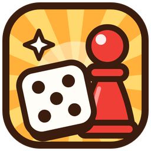

?
Toutes les matières
Écris tes propres questions ou charge un cours tout prêt : maths, français, sciences, cours techniques…
Le jeu de plateau à projeter en classe pour réviser n'importe quel cours en s'amusant : quiz, vrai ou faux, mimes, défis, pièces et boutique.
Gratuit, sans installation, de 2 à 30 joueurs. Tu choisis les questions, la classe fait la fête.

Écris tes propres questions ou charge un cours tout prêt : maths, français, sciences, cours techniques…
Quiz, vrai ou faux, défis et mimes : chaque case relance l'attention, même pour les élèves les plus discrets.
Dés animés, pièces, boutique, coup de feu final et étoiles bonus : l'ambiance d'un jeu vidéo, au service du cours.
Les questions ratées, les réponses données et la réussite de chaque élève, à télécharger en Word.
Partage tes cours dans la bibliothèque, profite de ceux des autres et échange sur le forum.
Fonctionne sans internet une fois chargé, sans compte pour jouer, et sans jamais stocker de données d'élèves.
Avec un compte gratuit, tes cours sont sauvegardés en ligne et tu les retrouves sur tous tes ordinateurs. Tu peux aussi les partager avec les autres profs et participer au forum.